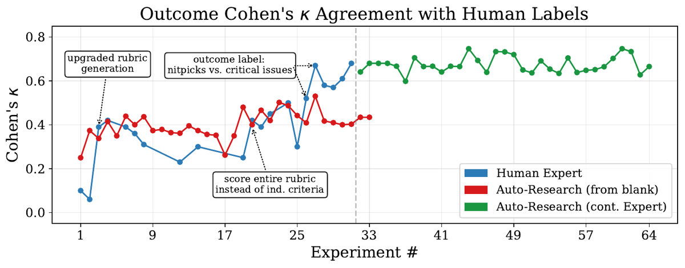
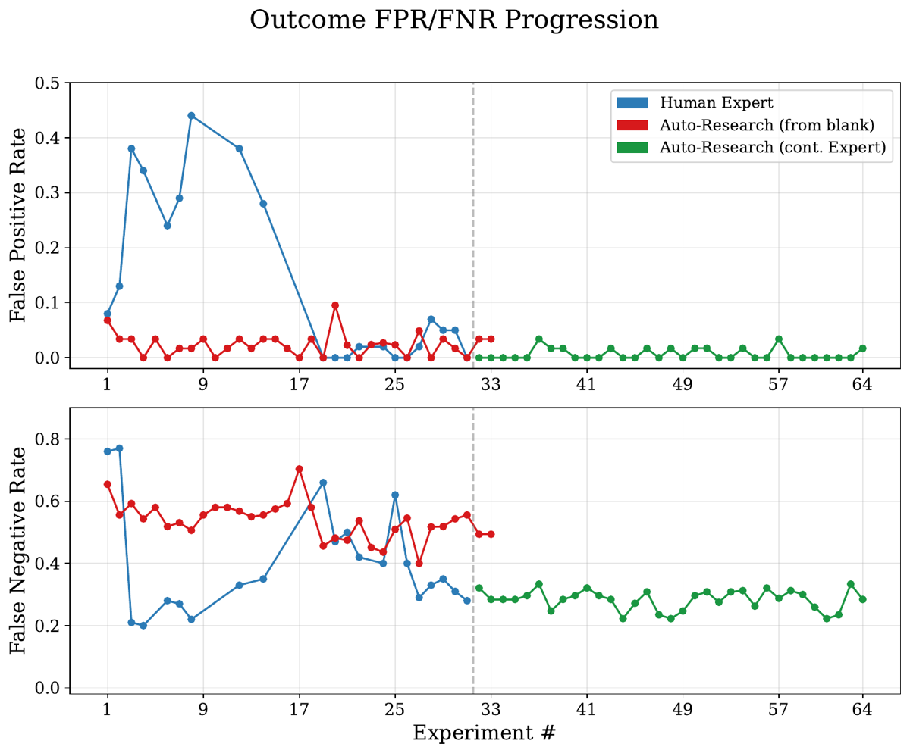
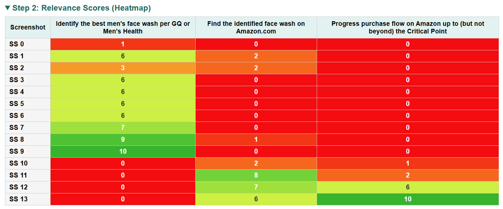

TL;DR — Retour d'expérience sur la construction d'un LLM-as-judge de trajectoires d'agents web (« Universal Verifier », UV), organisé en 4 principes de design (rubriques à critères disjoints · séparation process/outcome · contrôlable vs incontrôlable sans cascade d'erreurs · matrice de pertinence screenshot×critère pour gérer le contexte visuel), validé sur un benchmark maison de trajectoires doublement labellisées (CUAVerifierBench).
Claim principal, formulé précisément : sur CUAVerifierBench, l'UV (backbone GPT-5.2) atteint un Cohen's κ avec les labels humains de 0,64 outcome / 0,59 process sur l'Internal set (n=140) et 0,58 / 0,43 sur le set Browserbase-OM2W (n=106), avec FPR outcome 0,01 / 0,08, contre 0,31–0,13 (κ) et 0,45–0,60 (FPR) pour WebVoyager-GPT-4o et 0,44–0,26 / 0,22–0,40 pour WebJudge-o4-mini [Tab. 2] ; ces κ tombent dans l'intervalle d'accord inter-annotateurs humains mesuré sur le seul set Browserbase (0,53–0,57 outcome, 0,36–0,45 process) [Tab. 10], d'où la revendication « agrees with humans as often as humans agree with each other » [Abstract, §5].
Claim secondaire : le gain est architectural et non lié au backbone — passer WebVoyager et WebJudge à GPT-5.2 fait chuter leur FPR mais explose leur FNR, et ne remonte κ que modestement (WebVoyager outcome internal : κ 0,31→0,43, FPR 0,45→0,10, FNR 0,24→0,44) [Tab. 2, §C.3].
Claim tertiaire : un agent d'auto-recherche (Claude Code) atteint « 70 % de la qualité de l'expert en 5 % du temps » mais ne redécouvre pas les décisions structurelles [§5, Fig. 1] — ⚠️ voir 7.0, ce chiffre est contredit par leur propre figure.
⚠️ Ici « tâches » = trajectoires à labelliser, pas tâches d'entraînement. Aucun entraînement dans ce papier.
prompts.py de 259 566 octets, soit sensiblement plus que « 2 000 lignes » ; le texte parle par ailleurs de prompts « ~1 800-line » [Tab. 13, run 11].⚠️ Le papier ne construit pas un environnement d'entraînement ; il construit le vérifieur qui lit les trajectoires produites par d'autres harnesses. Ce qui suit décrit donc l'entrée du vérifieur, puis le harness du vérifieur lui-même.
Formalisation [§4] : tâche = couple $(g, \mathcal{E})$, $g$ but en langage naturel, $\mathcal{E}$ environnement à interface graphique observable. Trajectoire $\tau = (s_0, a_1, s_1, \dots, a_T, s_T)$, $s_t$ = screenshot, $a_t$ = action (click, type, scroll). Vérifieur = fonction $V:(g,\tau)\to(r_\text{proc}, r_\text{out}, d)$ avec $r_\text{proc}\in[0,1]$, $r_\text{out}\in{0,1}$, $d$ = rapport de diagnostic localisant les échecs.
Entrées comparées entre vérifieurs [Tab. 1] :
| Vérifieur | LLM | Rubrique | Screenshots | Action history | Final answer |
|---|---|---|---|---|---|
| WebJudge (OM2W) | o4-mini | non | top-$k$ les plus pertinents (score 1–5, gardés si ≥ seuil ; plafonné à 5) | complète | non |
| WebVoyager GPT eval | gpt-4o | non | tous (les $N$ derniers si dépassement ; $N{=}30$ par défaut) | non | oui |
| Universal Verifier | gpt-5.2 | oui, per-task success criteria | top-$k$ les plus pertinents par critère | complète | oui |
$T$ « varies across tasks from a handful of steps for form-filling to hundreds of steps for multi-stage workflows » [§4]. Exemple de trajectoire réelle citée : $M{=}47$ screenshots [§B.4].
Les étapes 7–9 peuvent être lancées en $N_\text{vote}$ instances parallèles : process = médiane des scores de rubrique, outcome = vote majoritaire [§4].
Rien dans le papier. ⚠️ Le README public du dépôt documente des court-circuits (verifier_reasoning="No actions found in the trajectory" → score 0 sans invoquer MMRubricAgent ; dernier action "<no_answer>" → score 0 sans appeler le juge de rubrique) — absent du papier, donc hors périmètre des chiffres rapportés. Déterminisme, reset, timeouts : non précisé (mais §C.2(4) reconnaît une variance stochastique large, cf. §4 ci-dessous).
Recopié de Tab. 12 (exemple de critère conditionnel), tâche : « How much does it cost to select a window seat on a direct AirAsia flight from Singapore to Langkawi from November 24 to November 27? If there are no available flights for those dates, please indicate that in your answer. »
| Critère | Pts |
|---|---|
| Access AirAsia booking flow and run the specified flight search — naviguer vers AirAsia, chercher SIN→LGK le 24/11 et LGK→SIN le 27/11 | 2/2 |
| Determine direct-flight availability for both legs — vérifier l'existence de vols directs pour chaque segment ; signaler l'indisponibilité le cas échéant | 7/7 |
| Report window-seat selection cost for the identified flights — Conditional : ne s'applique que si ≥ 1 vol direct AirAsia éligible existe pour le 24/11 et le 27/11. Condition remplie : oui.** | 1/4 |
| Total : 10/13 |
LLM-as-judge structuré, multi-appels, multimodal, rubrique générée par LLM puis scorée par LLM (deux rôles séparés). Aucun reward model entraîné, aucun exact match, aucune exécution de tests.
(1) Rubriques à critères spécifiques et non chevauchants [§3.1, §B.1]. Quatre failure modes de génération de rubrique et leurs correctifs : - Phantom criteria — la rubrique LLM ajoute des exigences jamais formulées par la tâche, gonflant le dénominateur. Exemple recopié [Tab. 11, tâche A] : tâche « trouver un concert sur Eventbrite puis les chansons des artistes sur Spotify » → l'ancienne rubrique ajoutait Ticket information, Event link, Spotify links → 5/9 = FAILURE ; la rubrique corrigée donne 5/6 = SUCCESS. Tâche B : 2 critères fantômes, −4 pts, 2/8 FAILURE → 9/9 SUCCESS. Tâche C : 3 critères fantômes, −6 pts, 4/12 FAILURE → 8/8 SUCCESS. Correctif : instruire le générateur d'ancrer les critères strictement sur ce que la tâche nécessite et interdire explicitement de noter sur de l'information que l'utilisateur n'a pas demandée. - Cascading errors — critères logiquement dépendants : une erreur amont se propage et multiplie la pénalité. Correctif : chaque critère est évalué indépendamment, sur le fait que les actions de l'agent étaient raisonnables compte tenu de l'information dont il disposait à cette étape, pas sur la correction des critères amont. Exemple [Fig. 6] : tâche « membres de NSYNC et des Backstreet Boys, fortune de celui au nom de famille le plus long » — l'agent croit à tort que « Timberlake » est le plus long (c'est « Kirkpatrick ») ; l'erreur est identifiée mais ne casse PAS le critère final « trouver et rapporter la fortune du membre identifié ». - Séparer génération et scoring — un seul appel LLM qui génère et score produit un biais de confirmation : le modèle crée des critères indulgents qu'il sait satisfaits, ou calqués sur le comportement observé. Correctif : générer la rubrique à partir de la tâche seule, puis scorer. - Critères conditionnels — « fais X, sinon rapporte-le ». Marqués conditionnels à la génération ; si la condition n'est pas remplie, le critère est exclu du numérateur ET du dénominateur [Tab. 12]. - Scoring en deux passes (détection d'hallucination) — chaque critère est scoré deux fois : une fois avec les seules actions textuelles de l'agent (les affirmations sont-elles fondées sur ce qu'il a réellement fait ?), une fois avec accès complet aux screenshots. Les écarts entre les deux passes signalent des hallucinations. Motivation explicite : avec les screenshots sous les yeux, le modèle « remplit les trous » des affirmations infondées de l'agent.
Les auteurs affirment, anecdotiquement (« Anecdotally »), que la bonne conception de rubrique à elle seule explique environ la moitié des gains de κ [§3.1]. ⚠️ Aucune ablation ne soutient ce chiffre.
(2) Séparer process et outcome — cf. supra.
(3) Contrôlable vs incontrôlable [§3.3]. Recopié : - Incontrôlables (non pénalisés en process) : problèmes de plateforme/infra (CAPTCHA, login wall sans identifiants) · non-existence d'entité (produit discontinué, commerce fermé) · contraintes de disponibilité (rupture de stock, plus de réservation à la date) · limites des résultats de recherche (aucun résultat satisfaisant tous les critères). - Contrôlables (pénalisés en process) : intent mis-match (mauvais produit/lieu/personne) · reasoning errors · hallucinations (revendiquer un succès sans évidence, fabriquer de l'information) · insufficient effort (abandonner après un seul essai) · execution errors (ne pas utiliser les filtres disponibles, sauter des étapes requises).
(4) Gestion du contexte visuel [§3.4] — ni « tous les screenshots dans une fenêtre » (WebVoyager : needle-in-a-haystack, passe mal à l'échelle sur trajectoires longues) ni « les derniers seulement » (risque de rater l'évidence). Solution : matrice de pertinence screenshot×critère, top-$k$ par critère.
(bis) Effets de bord non sollicités [§3.5] — actions extra à effet matériel (ajouter un article non demandé au panier, s'inscrire à un service). Impossibles à énumérer à la génération de rubrique → passe dédiée sur la trajectoire. Conséquence de scoring : « almost always result in outcome failure », mais ne pénalisent le process que partiellement, pondéré par la gravité.
⚠️ Il n'y a pas de taxonomie des vérifieurs. Le papier en propose trois autres, qui sont sa contribution structurante la plus réutilisable :
(a) Taxonomie de l'évidence visuelle — 5 catégories [Tab. 8, recopiée]. Principe : les screenshots font foi ; en cas de divergence entre l'affirmation de l'agent et le screenshot, le screenshot prime.
| Catégorie | Verdict | Exemple |
|---|---|---|
| Contradiction : le screenshot montre $X$, l'agent affirme $\neg X$ | Failure | Le screenshot montre un calendrier de réservation ; l'agent dit « aucun système de réservation disponible » |
| Fabrication : l'agent affirme $X$ sans aucune base probatoire | Failure | L'agent énonce un prix qui n'apparaît dans aucun screenshot |
| Omission : l'agent n'a pas tout regardé ; les screenshots ne prouvent pas $X$, mais $X$ est communément connu comme existant | Failure | Tâche « meilleure équipe NHL de la Western Conference » ; l'agent n'a consulté que la Central Division, jamais la Pacific |
| Inférence fondée sur l'absence : aucun screenshot ne montre $X$ sur toutes les pages, ET $X$ n'est pas communément connu comme existant | Success | Aucune UI de réservation visible nulle part → l'agent rapporte « pas de réservation en ligne » |
| Confirmation visuelle sans énoncé explicite : l'agent omet la justification mais les screenshots confirment visuellement le résultat | Success | L'agent a trouvé des cardiologues femmes sans le dire ; les photos le confirment |
(b) Table de comportement par scénario [Tab. 7, recopiée] — c'est le « contrat » du vérifieur :
| Scénario | Process | Outcome |
|---|---|---|
| Tâche résolue correctement, sans blocage ni effet de bord | Success | Success |
| Blocage environnemental (CAPTCHA, login wall, site down, rupture) ; agent l'a clairement signalé et n'a pas tenté d'alternative | Success (best effort) | Failure (but non atteint) |
| Agent a contourné le blocage via une source alternative et livré le bon résultat | Success | Success |
| Erreur contrôlable (mauvais produit, mauvaise date, option manquée) | Failure (déduction par critère) | Failure (si l'erreur affecte le but) |
| Bonne approche mais mauvaise réponse finale (erreur de calcul/raisonnement) | Failure (déduction modérée) | Failure |
| Effets de bord non sollicités | Failure | Failure |
| Hallucination / erreur d'ancrage (affirmations contredites par les screenshots) | Failure (l'évidence visuelle prime) | Failure |
| Agent s'est arrêté à un Critical Point (pas de permission) — comportement correct | Success | Success |
| Agent s'est arrêté à un Critical Point alors qu'il AVAIT la permission | Failure | Failure |
| Tâche sous-spécifiée : l'agent demande à l'utilisateur de clarifier (rien d'autre à redire) | Success | Success |
| Tâche sous-spécifiée : l'agent fait des hypothèses sans demander | Failure (si les hypothèses ont mené à des erreurs) | Failure (si le résultat ne correspond pas à l'intention) |
(c) Taxonomie d'erreurs — 7 catégories, 24 sous-codes [Tab. 9] : 1. Selection (1.1 missing intent, 1.2 unauthorized substitution, 1.3 wrong action type, 1.4 wrong values/constraint violation, 1.5 other) · 2. Hallucination (2.1 output contradiction, 2.2 action contradiction, 2.3 output fabrication, 2.4 action fabrication, 2.5 other) · 3. Execution & Strategy (3.1 computational mistakes, 3.2 platform non-compliance, 3.3 incomplete delivery, 3.4 environment failure, 3.5 incomplete task execution, 3.6 other) · 4. Critical Point (4.1 premature stop, 4.2 violation, 4.3 other) · 5. Task Ambiguity (5.1 underspecified, 5.2 ambiguous, 5.3 unsafe, 5.4 other) · 6. Side-Effect (6.1 unsolicited, 6.2 other) · 7. Tool Interaction (7.1 invalid invocation, 7.2 hallucinated action, 7.3 intent–action mismatch, 7.4 other).
Pas de terme de format, de longueur ni de pénalité globale. Les seuls « termes » sont les points par critère et la pénalisation partielle pondérée des effets de bord [§3.5].
Contre combien d'humains, sur combien d'items : - Internal (n=140) : annotateurs experts internes, nombre non précisé, pas de double annotation, donc aucun plafond humain-humain mesuré sur ce jeu. - Browserbase-OM2W (n=106) : 2 annotateurs indépendants par trajectoire (215 paires annotateur–tâche) [Fig. 10]. ⚠️ Tab. 10 annonce « 103 Browserbase-OM2W tasks with two raters » alors que le texte dit 106 — incohérence.
Plafond humain-humain [Tab. 10] :
| UV-Blind % accord | UV-Blind κ | UV-Informed % accord | UV-Informed κ | |
|---|---|---|---|---|
| Outcome (binaire) | 79,6 | 0,57 | 82,5 | 0,53 |
| Process (binaire) | 72,8 | 0,45 | 72,8 | 0,40 |
| Process (score ≥ 0,8) | 68,9 | 0,36 | — | — |
Scores de process continus entre annotateurs : Pearson $r = 0{,}62$, MAE $= 0{,}21$ [Tab. 10]. Désaccords : 22 tâches sur outcome UV-blind, 18 sur outcome UV-informed, 29 sur process UV-blind, 28 sur process UV-informed [§C.2].
FPR et FNR séparés [Tab. 2 ; Tab. 14 pour les ±std sur 3 runs] :
| Jeu | Signal | Vérifieur | κ | FNR | FPR |
|---|---|---|---|---|---|
| Internal n=140 | outcome | WebVoyager GPT-4o | 0,31 ± 0,01 | 0,24 ± 0,01 | 0,45 ± 0,01 |
| Internal | outcome | WebVoyager GPT-5.2 | 0,43 | 0,44 | 0,10 |
| Internal | outcome | WebJudge o4-mini | 0,44 ± 0,01 | 0,33 ± 0,01 | 0,22 ± 0,02 |
| Internal | outcome | WebJudge GPT-5.2 | 0,33 | 0,57 | 0,07 |
| Internal | outcome | UV GPT-5.2 | 0,64 ± 0,03 | 0,32 ± 0,03 | 0,01 ± 0,01 |
| Internal | process | UV GPT-5.2 | 0,59 ± 0,03 | 0,24 ± 0,01 | 0,04 ± 0,01 |
| Browserbase n=106 | outcome | WebVoyager GPT-4o | 0,13 ± 0,01 | 0,12 | 0,60 ± 0,01 |
| Browserbase | outcome | WebJudge o4-mini | 0,26 ± 0,03 | 0,12 ± 0,05 | 0,40 ± 0,02 |
| Browserbase | outcome | UV GPT-5.2 | 0,58 ± 0,04 | 0,31 ± 0,07 | 0,08 ± 0,01 |
| Browserbase | process | UV GPT-5.2 | 0,43 ± 0,03 | 0,29 ± 0,02 | 0,20 ± 0,01 |
Effet du stage UV-informed [Tab. 7 / §5] : outcome κ 0,39 → 0,63, FNR 0,62 → 0,35, FPR 0,05 → 0,04 ; process κ 0,43 → 0,50, FNR 0,32 → 0,09, FPR 0,23 → 0,25. Label-flips : 16,6 % des jugements outcome d'annotateurs changent après avoir vu le raisonnement de l'UV ; sur 34 flips outcome, 31 vont de success→failure, 2 vers un succès identifié par l'UV, 1 pour contester un échec appelé par l'UV. Côté process, 21 des 25 flips vont vers un échec identifié par l'UV [§C.2]. ⚠️ 34/215 = 15,8 %, pas 16,6 % (16,6 % correspondrait à n=205) — dénominateur non précisé.
Accord des scores continus : Pearson $r = 0{,}61$ ($p<10^{-22}$), Spearman $\rho = 0{,}58$ ($p<10^{-20}$) entre score de rubrique UV et score humain [§C.2, Fig. 10].
webeval/src/webeval/rubric_agent/prompts.py, 259 566 octets, vérifié 2026-09-30). C'est une limite sérieuse pour la reproduction depuis le papier seul.example_match_check étendu pour forcer le LLM à vérifier nommément les règles (Entity Non-Existence, Multi-Item Cart, Critical Point Output…) avant de rendre son verdict — palliatif au problème « les règles existent dans un prompt de ~1 800 lignes mais ne sont pas appliquées ».❌ Non. Voir §5 ci-dessous — c'est le trou principal du papier.
⚠️ Aucun RL, aucun entraînement de policy, aucun GRPO/PPO. Les mots « reward hacking », « GRPO », « RLVR » n'apparaissent pas dans le source LaTeX. L'« optimisation » du papier est la boucle de conception du vérifieur, qui mérite d'être lue comme un algorithme à part entière.
// TODO, seul le scaffold de code reste ; pas d'accès aux versions antérieures, commits ou branches ; un compliance agent audite chaque itération pour empêcher la mémorisation d'exemples de test dans les prompts ; (b) continuing expert work — départ depuis les meilleurs prompts de l'expert. Durée : « roughly one day » vs trois semaines [Fig. 1 caption].| Comportement | Détection | Correction |
|---|---|---|
| Phantom criteria : rubrique LLM exigeant des choses jamais demandées → dénominateur gonflé, faux négatifs | Inspection manuelle des trajectoires positives mal notées [Tab. 11] | Instruire le générateur d'ancrer strictement sur la tâche ; interdire explicitement de noter des infos non demandées |
| Cascading errors : une erreur amont propage la pénalité en aval | Ex. Fig. 6 (Timberlake/Kirkpatrick) | Scorer chaque critère indépendamment, sur la base de ce que l'agent savait à cette étape |
| Confirmation bias : un seul appel LLM générant+scorant fabrique des critères taillés sur le comportement observé | Comparaison de versions du pipeline | Séparer génération (tâche seule) et scoring |
| Critères mutuellement exclusifs (« achète bio, sinon non-bio ») pénalisant l'agent quoi qu'il fasse | Analyse des tâches à contingence | Critères conditionnels exclus du numérateur ET du dénominateur |
| Hallucination masquée par l'évidence : le scorer « remplit les trous » des affirmations infondées avec les screenshots | Écart entre la passe action-only et la passe multimodale | Scoring en deux passes, diff = drapeau d'hallucination |
| Effets de bord non anticipables à la génération de rubrique (ajout au panier non demandé, Fig. 8) | Passe dédiée sur la trajectoire | Critère ajouté a posteriori ; échec outcome, pénalité process pondérée par la gravité |
| Needle-in-a-haystack sur trajectoires longues (tous les screenshots dans un contexte) | Dégradation sur grand $T$ (affirmée, non chiffrée) | Matrice de pertinence + top-$k$ par critère |
| « Les règles existent mais ne sont pas appliquées » dans un prompt de ~1 800 lignes | Logs d'itérations auto-research | Champ JSON example_match_check obligatoire forçant la vérification nommée des règles [Tab. 13, run 11] |
Points d'échec normalisés par trajectoire [Tab. 10 du papier / tab:failure-points] :
| Benchmark | Modèle | Selection | Hallucination | Exec. & Strategy | Critical Point | Side-Effect | Tool Interaction |
|---|---|---|---|---|---|---|---|
| WebVoyager | Fara-7B | 0,442 | 0,821 | 0,740 | 0,000 | 0,002 | 0,019 |
| WebVoyager | GPT-5 | 0,206 | 0,424 | 0,382 | 0,000 | 0,002 | 0,040 |
| OM2W | Fara-7B | 0,724 | 0,905 | 1,456 | 0,007 | 0,007 | 0,046 |
| OM2W | GPT-5 | 0,331 | 0,404 | 0,879 | 0,000 | 0,007 | 0,026 |
| WebTailBench | Fara-7B | 0,785 | 1,078 | 0,988 | 0,000 | 0,010 | 0,036 |
| WebTailBench | GPT-5 | 0,485 | 0,495 | 1,054 | 0,000 | 0,020 | 0,047 |
→ L'hallucination est le mode d'échec n°1 pour Fara-7B (0,82–1,08 par trajectoire) et reste dominant pour GPT-5. Exemple qualitatif [Fig. 7] : l'agent rapporte « +6,2 % CIDEr » là où l'abstract arXiv qu'il a effectivement consulté dit « +2,8 % in CIDEr » — les auteurs notent que « even humans are likely to miss » ce type d'erreur.
Aucune policy n'est entraînée contre l'UV. Aucun red-teaming, aucune recherche adversariale de prompts/comportements maximisant $r_\text{proc}$ ou $r_\text{out}$ sans accomplir la tâche. Le papier ne le revendique pas non plus — mais l'abstract positionne explicitement le vérifieur comme source de « training signal », ce que les mesures ne soutiennent pas.
⚠️ Mon évaluation : une FPR de 0,01 mesurée passivement ne survit pas nécessairement au gradient, et le papier contient lui-même la preuve du contraire. La seule expérience du papier où un optimiseur a le droit de pousser sur le vérifieur est la boucle auto-research — et là, 4 itérations sur 11 (runs 1, 3, 4, 5) ont été rollback précisément pour avoir augmenté la FPR (process FPR 8,82 %, 5,88 %, 5,88 %, outcome FPs = 2) [Tab. 12]. Autrement dit : dès qu'un optimiseur cherche à maximiser κ, il trouve systématiquement des changements qui font remonter la FPR d'un ordre de grandeur, et seule une contrainte de rollback externe la maintient à ~0. Cette contrainte n'existera pas quand la policy, et non le concepteur, sera l'optimiseur.
⚠️ Surfaces d'attaque identifiables par construction, non testées : 1. La clause « incontrôlable » [§3.3, Tab. 7] : process = Success si l'agent signale clairement un blocage environnemental et ne tente pas d'alternative. Une policy entraînée sur $r_\text{proc}$ apprend directement à déclarer un blocage. C'est un chemin de reward hacking à un seul tour. 2. La règle « rubrique ≥ 95 % → il faut un problème critique SPÉCIFIQUE pour renverser l'outcome » [Tab. 13, run 6] : un biais explicite vers le succès conditionné à un score de rubrique que la policy peut maximiser critère par critère. 3. « Visual confirmation without explicit statement » → Success [Tab. 8] : la policy n'a pas besoin d'énoncer sa justification si le screenshot la porte — donc produire beaucoup d'états visuels plausibles est récompensé. 4. Le générateur de rubrique est lui-même un LLM voyant la tâche : si les tâches sont générées par modèle (cas usuel en RL), tâche et rubrique partagent un mode de défaillance corrélé.
tab:llm_calls], avec $M$ = nb de screenshots, $N$ = nb de critères, $K$ = max screenshots/critère, $S$ = screenshots uniques sélectionnés à l'étape 3 :| Étape | Appels LLM | Parallélisme |
|---|---|---|
| 1a Génération initiale de rubrique | 1 | — |
| 1b Dependency checking | 1 | — |
| 1c Scoring action-history-only | 1 | — |
| 2 Relevance scoring screenshot×critère | $M$ | totalement parallèle |
| 3 Groupement top-$k$ | 0 | — |
| 4a Evidence analysis (batchée) | $S \le K\times N$ | totalement parallèle |
| 4b Post-evidence condition disentanglement | ≤ 1 | — |
| 5 Reality check | 1 | — |
| 6 Rescoring multimodal † | 1 | — |
| 7 Side-effect detection † | 1 | — |
| 8 Outcome verification † | 1 | — |
† multiplié par $N_\text{vote}$ si vote majoritaire activé.
| Chiffre annoncé | Où | Source dans le papier | Verdict |
|---|---|---|---|
| « agrees with humans as often as humans agree with each other » | Abstract, Intro (contrib. 1), §5, Conclusion | UV outcome κ 0,58 vs inter-annot. 0,53–0,57 ; UV process κ 0,43 vs inter-annot. 0,36–0,45 [Tab. 2 + Tab. 10] | sur-généralisé — vrai uniquement sur Browserbase-OM2W (n=106), uniquement contre des labels UV-informed [légende Tab. 14], et en comparant le κ process de l'UV (0,43, mesuré contre le label score≥0,8) à un intervalle qui mélange deux métriques humaines différentes (binaire 0,40–0,45 ET score≥0,8 = 0,36). Contre les labels UV-blind, l'UV est à κ outcome 0,39 [Tab. 7], nettement sous le plafond humain 0,57. Aucun plafond humain n'existe sur l'Internal set (pas de double annotation). |
| « reduction in false positive rates to near zero compared to WebVoyager (≥45 %) and WebJudge (≥22 %) » | Abstract, Conclusion | WebVoyager FPR outcome 0,45 (Internal) / 0,60 (BB) ; WebJudge 0,22 / 0,40 ; UV 0,01 / 0,08 [Tab. 2] | partiellement confirmé, partiellement sur-généralisé — les bornes baselines (≥45 %, ≥22 %) sont exactes (ce sont les minima sur les deux jeux). « near zero » pour l'UV n'est vrai que pour outcome sur l'Internal set (0,01) ; sur Browserbase, outcome = 0,08 et process = 0,20, qu'on ne peut pas appeler « near zero ». |
| « reducing false positive rates from 30 %+ to 1–8 % » | Intro | WebJudge Internal outcome FPR = 0,22 [Tab. 2] | contredit — 0,22 < 0,30. Et « 1–8 % » ne couvre que l'outcome ; la FPR process de l'UV monte à 0,20 sur Browserbase [Tab. 2]. |
| « an auto-research agent achieves 70 % of expert quality in 5 % of the time » | Abstract, §5 | 5 % : 1 jour vs 3 semaines [légende Fig. 1] ; 70 % : aucun tableau | 5 % confirmé (1/21 ≈ 4,8 %). 70 % : dérivation introuvable — aucun calcul n'est donné ; selon le point lu sur Fig. 1, le rapport vaut 0,43/0,68 = 63 % (plateau final) ou 0,53/0,68 = 78 % (pic). |
| « κ plateauing around 0,55 » (auto-research from blank) | Intro | Fig. 1 : la courbe rouge plafonne à ~0,40–0,43 sur les exp. 28–32, avec un pic unique à ~0,53 (exp. ~27) | contredit par leur propre figure. La courbe rouge ne vaut 0,55 à aucun point. |
| « Figure 1 traces this iterative journey over 96 experiments » | Intro | Fig. 1 : axe x 1→64, 3 courbes (bleue 1–32, rouge 1–32, verte 33–64) | confirmé au sens de 96 runs cumulés sur 3 réglages ; la formulation induit en erreur (l'axe s'arrête à 64). |
| « reaching κ ≈ 0,7 by experiment 32 » (expert) | Intro | Fig. 1 : bleu ≈ 0,68 à l'exp. 32 | confirmé (approximation acceptable). |
| « when initialized from the expert's best config, the auto-research agent surpasses the expert-designed peak » | Intro | Fig. 1 : vert max ≈ 0,745 vs bleu 0,68 | sur-généralisé — numériquement vrai, mais §C.2(4) déclare que κ varie de 0,64 à 0,71 à prompts identiques ; l'écart 0,68→0,745 est à peine hors de leur propre bande de bruit, et Tab. 12 run 9 documente qu'un run « meilleur » (run 6) était en fait chanceux. |
| « good rubric design alone accounted for roughly half of the Cohen's κ gains » | §3.1 | « Anecdotally, Figure 1 shows… » — aucune ablation | introuvable — auto-qualifié d'anecdotique par les auteurs ; Fig. 1 est un journal de développement séquentiel, non contrôlé. |
| « the UV's advantage stems from its screenshot scoring design, not merely from using a stronger model » | §5, Conclusion | WebVoyager Internal outcome κ 0,31→0,43 avec GPT-5.2, vs UV 0,64 ; FNR 0,24→0,44 [Tab. 2, §C.3] | confirmé — c'est le contrôle le plus propre du papier. |
| « Only 16,6 % of annotator outcome judgements flipped » | §5 | 34 flips [§C.2] sur 215 paires annotateur–tâche [Fig. 10] = 15,8 % | incohérent — 16,6 % implique n=205. Dénominateur non précisé. |
| « outcome Cohen's κ rises from 0,39 to 0,63, FNR 0,62→0,35, FPR ~0,04 ; process FNR 0,32→0,09 » | §5 | Tab. 7 | confirmé ligne à ligne. |
| « AgentRewardBench FPR ≈ 0,27 (8/30) » | §5, §C.4 | Tab. 15 + texte §C.4 | confirmé, mais échantillon n=30 et jugé par un seul annotateur expert maison. |
| « inter-annotator agreement on 103 Browserbase-OM2W tasks » | Légende Tab. 10 | Texte §4.1 et §C.2 : 106 tâches | contredit (103 vs 106). |
| « outcome agreement improves slightly (κ: 0,57 → 0,53 ; disagreements: 21 → 18) » | §C.2 | Tab. 10 : κ 0,57 → 0,53 ; et le paragraphe précédent dit 22 désaccords UV-blind outcome | contredit deux fois : le κ baisse alors que le texte dit « improves » ; et 21 ≠ 22 dans le même paragraphe. |
| Légende Fig. 9 : « 13 screenshots were scored against five criteria » | §B.2 | La figure montre SS 0 à SS 13 (= 14 screenshots) et 3 colonnes de critères | contredit par la figure elle-même. |
| « $3+47+10+1+1+1+1+1 = 65$ appels LLM » | §B.4 | arithmétique | confirmé. |
microsoft/fara, rubric_agent/ avec prompts.py, mm_rubric_agent.py, verifier_agent.py, templates Jinja ; vérifié par HTTP le 2026-09-30). CUAVerifierBench (les labels humains) est absent du dépôt — 224 chemins parcourus, aucun fichier de labels ; le papier dit lui-même « will be available ». Aucun prompt n'est recopié dans le papier, ce qui rend celui-ci non auto-suffisant.Plausible mais fragile — la méthodologie de conception est solide et directement réutilisable ; le chiffre-vitrine ne l'est pas. Ce qu'il faut garder : la décomposition du problème (rubrique générée à l'aveugle → matrice de pertinence → double passe → process/outcome séparés → taxonomies), le contrôle backbone, l'honnêteté sur la variance, et le résultat sur l'inflation des benchmarks [Tab. 3]. Ce qu'il faut refuser : « accord humain-humain » et « FPR ~0 » comme faits acquis (cf. verdict en §Réponse), et toute extrapolation vers « donc c'est un bon reward d'entraînement », qui n'est pas testée.

Ce qu'il faut voir : la construction d'un vérifieur est une courbe d'apprentissage humaine, pas un artefact. Le bleu (expert) part de κ ≈ 0,10 et monte à ≈ 0,68 en 32 expériences, par sauts annotés sur la figure — « upgraded rubric generation » (~exp. 3), « score entire rubric instead of ind. criteria » (~exp. 19), « nitpicks vs. critical issues » (~exp. 27) — séparés par de longs plateaux et même des régressions (chute à 0,30 vers l'exp. 25). Le rouge (auto-research from blank) démarre plus haut (0,25) mais plafonne autour de 0,40–0,43, pas 0,55 comme l'affirme l'intro : la revendication « 70 % de la qualité de l'expert » se lit plutôt 63 %. Le vert (auto-research partant des meilleurs prompts de l'expert) oscille entre 0,63 et 0,745 sur 32 runs — amplitude qui recouvre presque exactement la bande de bruit à prompt fixe (0,64–0,71) que les auteurs déclarent eux-mêmes en §C.2(4). Lecture pour nous : le budget humain (3 semaines d'un expert unique) est le vrai coût d'entrée, et l'automatisation ne le remplace pas — elle le raffine.
Ce qu'il faut voir : la figure qui relativise le titre. En haut, la FPR de l'expert (bleu) monte à 0,44 vers l'expérience 8 avant d'être écrasée à ~0,00 à partir de l'expérience ~18 et d'y rester. En bas, au même moment, la FNR remonte de 0,22 à 0,66 (exp. 18) puis redescend à ~0,28. Autrement dit la « FPR ~0 » n'est pas tombée du ciel : c'est le produit de ~14 itérations de calibration explicitement contraintes à ne jamais augmenter la FPR [§4.3], sur le jeu de 140 trajectoires qui sert aussi de jeu de rapport. Le vert (auto-research continuant l'expert) reste collé à FPR ≈ 0 avec FNR ≈ 0,22–0,33 — parce que la règle de rollback l'y force. Et 4 des 11 runs ont dû être annulés précisément pour avoir fait remonter la FPR [Tab. 12] : dès qu'un optimiseur pousse, la FPR bouge.
Ce qu'il faut voir : le mécanisme central, et le seul qui ne se transpose pas tel quel au juridique. Chaque screenshot (SS 0 à SS 13) est noté 0–10 contre chaque critère de la rubrique. La structure en escalier est nette : SS 1–9 portent le critère 1 (« identifier le meilleur face wash selon GQ/Men's Health », pics à 9 et 10), SS 11–13 portent le critère 2 (« le trouver sur Amazon », 8/7/6), SS 12–13 le critère 3 (« avancer l'achat jusqu'au Critical Point », 6 puis 10). Les zéros dominent : sur 42 cases, une large majorité est non pertinente — d'où le gain du top-$k$ par critère plutôt que d'un top-$k$ global. ⚠️ Noter aussi que la légende du papier annonce « 13 screenshots … five criteria » là où la figure en montre 14 et 3 : un des symptômes du problème de cohérence relevé en 7.0.| Ingrédient | Choix du papier | Équivalent juridique | Transfert | Ce qui manque |
|---|---|---|---|---|
| Source des tâches | Trajectoires rejouées de benchmarks publics (WebTailBench, OM2W), agents Fara-7B / GPT-5 [§4.1] | Réponses Gemini sur questions de recherche juridique (style Vals LRB / Harvey LAB), rejouées | direct | Rien de spécifique — mais l'équivalent des « benchmarks publics gonflés » [Tab. 3] est à vérifier sur Vals/LAB avant de s'y fier |
| Génération de rubrique à partir de la TÂCHE SEULE, jamais de la réponse | Étape 1 de l'Algorithme 1 ; motivée par un biais de confirmation observé [§B.1] | Critères de succès dérivés de la question juridique seule : autorités contrôlantes à citer, éléments du test, exceptions, juridiction, période | direct | Rien. C'est le transfert le plus propre et le moins cher du papier. |
| Critères disjoints / sans cascade | Chaque critère jugé sur « l'agent était-il raisonnable compte tenu de ce qu'il savait à cette étape » [§B.1, Fig. 6] | Une mauvaise qualification en amont ne doit pas annuler une application correcte de la règle en aval | direct | Rien — et c'est plus important en droit, où les raisonnements sont profondément chaînés |
| Critères conditionnels (exclus du numérateur ET du dénominateur) | Tab. 12 (vol direct existe ou non) | « Si la jurisprudence est divisée, exposer le split » ; « si la clause X existe au contrat, analyser Y » | direct | Qui évalue la condition ? En CUA c'est un screenshot ; en droit c'est un jugement juridique (cf. infra) |
| Vérifieur : évidence externe prime sur les affirmations de l'agent | Screenshots font foi [Tab. 8, étape 7] | Le texte de la source, récupéré indépendamment au pincite cité (Légifrance / EUR-Lex / base de record), prime sur ce que le mémo affirme qu'elle dit | adaptable | Un source of record versionné, adressable au pincite, et fetchable par le vérifieur sans passer par l'agent. Sans lui, tout le pilier s'effondre en LLM-as-judge non ancré. |
| Double passe (sans évidence / avec évidence) pour détecter l'hallucination | Score action-only $r_\text{proc_action_only}$ vs rescoring multimodal ; le diff signale [§B.1] | Scorer le mémo (a) sur son texte seul, (b) avec le texte réel des autorités citées injecté ; le diff = citation hallucinée ou déformée | direct | Rien de conceptuel. C'est l'ingrédient à transposer en premier (cf. infra) |
| Séparation process / outcome | Process = exécution, outcome = but atteint du point de vue de l'utilisateur [§3.2] | Ne se mappe pas sur exécution/état-du-monde. Se mappe sur : process = correction de la recherche et des citations (vérifiable par rubrique) vs outcome = qualité de l'analyse et de l'argumentation (non vérifiable sans expert) | adaptable, avec perte | En CUA l'outcome est le signal le moins subjectif (κ inter-annot. 0,57 > process 0,36–0,45). En droit l'ordre s'inverse : la part mécaniquement vérifiable est la recherche/citation, pas la conclusion. |
| Contrôlable vs incontrôlable | CAPTCHA, rupture de stock, entité inexistante → pas de pénalité process [§3.3] | « Question réellement non tranchée », « pas d'autorité contrôlante », « source non accessible » → pas de pénalité | non (en l'état) | En CUA l'incontrôlable est une observation (le CAPTCHA est dans le pixel). En droit c'est une conclusion juridique. Transposé tel quel, c'est une porte de reward hacking béante (cf. infra). |
| Harness / outils | Matrice de pertinence screenshot×critère, top-$k$ par critère, pruning >7/<5, tie-break temporel [§B.2] | Matrice de pertinence passage récupéré × critère ; top-$k$ passages par critère ; tie-break par hiérarchie des normes et date, pas par récence temporelle | adaptable | Le tie-break temporel de l'UV (« le plus récent porte l'état le plus à jour ») est faux en droit : le plus récent n'est pas l'autorité la plus forte. À remplacer par un ordre juridique explicite. |
| Algo d'optimisation | Aucun RL. Hill-climbing sur κ sous contrainte FPR non croissante, 32 itérations humaines + auto-research [§4.3] | Même boucle de conception du vérifieur, avant tout RL | direct | La contrainte « ne jamais augmenter la FPR » est excellente et gratuite à adopter. Mais elle exige un jeu de dev distinct du jeu de rapport — ce que le papier ne fait pas. |
| Curriculum | Sans objet | Sans objet à ce stade | non | — |
| Anti-hacking | ❌ Aucun test adversarial ; FPR mesurée passivement [§5] | — | non | Tout. Aucun garde-fou validé sous gradient n'est apporté par ce papier. |
| Protocole de validation (UV-blind puis UV-informed, plafond inter-annotateurs, κ + FPR/FNR séparés) | §4.1, Tab. 7, Tab. 10 | Deux juristes indépendants, phase aveugle puis phase informée, plafond inter-juristes | direct — mais à corriger | Le papier met en avant les chiffres UV-informed. À ne pas imiter : les labels informés ne sont plus une vérité terrain indépendante. Rapporter l'aveugle en titre, l'informé comme étude d'usage. |
L'architecture entière de l'UV repose sur un actif unique : un flux d'évidence externe, non rédigé par l'agent, que le vérifieur peut consulter indépendamment, avec la règle « l'évidence prime sur les affirmations » [Tab. 8]. Trois des quatre principes en dépendent directement (matrice de pertinence, double passe, discrimination contrôlable/incontrôlable).
Bonne nouvelle : cet actif existe en droit, et il est même meilleur que des screenshots — le texte des normes et décisions au pincite cité, récupéré depuis une base de record, est textuel, comparable par machine et adressable par version. L'erreur serait de croire que « en droit il n'y a que du texte » signifie « il n'y a pas d'évidence » : la réponse de l'agent est une affirmation, la source récupérée est l'évidence. La distinction claim/evidence survit intacte.
Trois choses, en revanche, ne survivent pas, et il faut les chiffrer :
Le scoring en deux passes avec/sans évidence, plus la règle de précédence « l'évidence prime sur les affirmations » [§B.1, Tab. 8]. Raisons : (i) il attaque directement le mode d'échec n°1 mesuré ici (hallucination : 0,82–1,08 points d'échec par trajectoire pour le petit modèle, [Tab. 10 du papier]) qui est aussi le mode d'échec n°1 du juridique ; (ii) contrairement au reste, il ne demande aucun expert — juste un fetch par pincite ; (iii) il produit un signal binaire et non contestable (la source dit ceci, le mémo dit cela), donc utilisable comme reward vérifiable au sens strict, pas comme opinion de juge ; (iv) il est bon marché : deux passes de scoring, pas $M$ appels. Second choix, gratuit : la règle de rollback « maximize κ without increasing FPR » [§4.3] comme discipline de développement du vérifieur — mais avec un jeu de dev séparé du jeu de rapport, ce que le papier ne fait pas.
Setup. ~150 réponses Gemini à des questions de recherche juridique de style Vals LRB / Harvey LAB, sur une juridiction où l'on a un source of record fetchable par pincite (commencer par le droit de l'UE : EUR-Lex est versionné, multilingue, et adressable à l'article).
Vérifieur. (1) Générer la rubrique depuis la question seule, avec critères conditionnels ; (2) scorer passe A = texte du mémo seul ; (3) scorer passe B = mémo + texte réel récupéré à chaque pincite cité ; (4) diff A/B → drapeaux contradiction / fabrication ; (5) sortir $r_\text{cit}$ (ancré) et $r_\text{analyse}$ (rubrique) séparément, sans les fusionner.
Validation. 2 juristes indépendants, protocole blind d'abord (jamais montrer le verdict avant de collecter le label), plafond = κ inter-juristes, rapporter κ, FPR et FNR séparément et par dimension.
Résultat attendu, chiffré à l'avance. Sur la dimension citation : κ proche du plafond inter-juristes (par analogie à l'outcome ici, 0,58–0,64 contre un plafond ~0,55) et FPR < 0,10, parce que la tâche est mécanique. Sur la dimension analyse : κ nettement sous le plafond (par analogie au process, 0,43 contre 0,36–0,45) — et, contrairement au CUA, sans espoir de rattrapage par plus d'évidence. Prédiction falsifiable qui décide de l'intérêt de la chose : les autoraters actuellement utilisés sur Vals/LAB présenteront une FPR > 20 % vis-à-vis de ce vérifieur, et les taux de succès publiés chuteront de 15 à 35 points absolus — c'est exactement le motif de Tab. 3 (74,6 % → 37,9 %). Si cette chute ne se produit pas, le gain du dispositif est marginal et il faut s'arrêter là.
Garde-fou à ajouter par rapport au papier : avant de brancher quoi que ce soit en reward, entraîner une petite policy contre $r_\text{cit}$ pendant quelques centaines de steps et regarder si la FPR mesurée passivement tient. Le papier ne l'a pas fait ; nous ne pouvons pas nous le permettre.